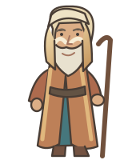

0of 8 pairs
safe aboard
safe aboard
The gathering1:30
TWO BY TWOWalk to any animal to begin.

A little courage.A great big Ark.
A BIBLEBUCKET STORYBOOK GAME
Two by Two
Noah’s Ark · 2.0
The clouds are gathering.
There’s still room for everyone.
Find an animal, find its partner, then guide them to the glowing Ark ramp. Bring all eight pairs safely aboard.
Tap a place to walk · drag to guide · arrows / WASD
← All gamesOpening the gates…